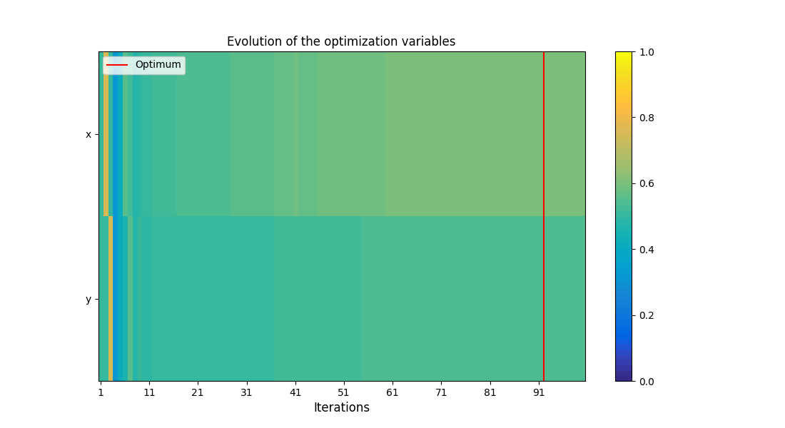
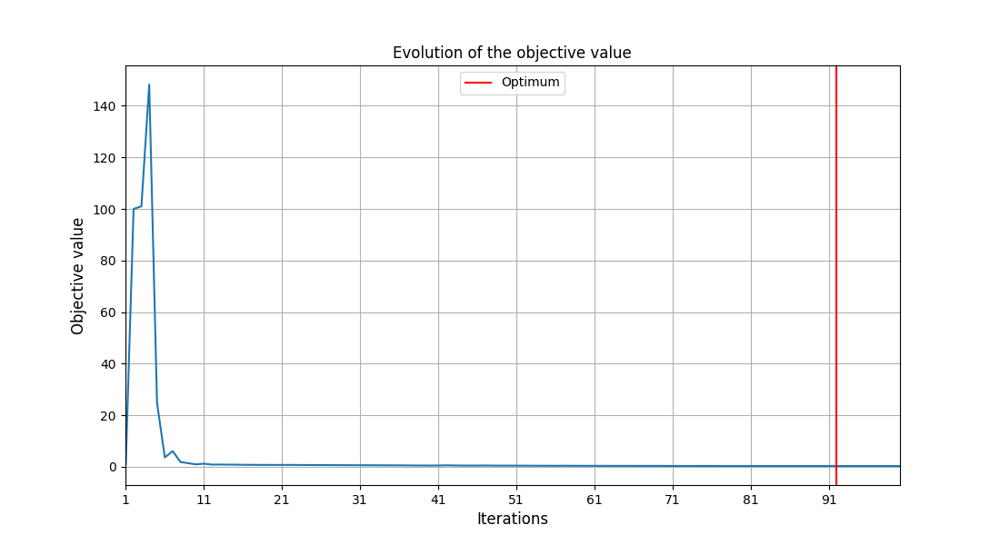
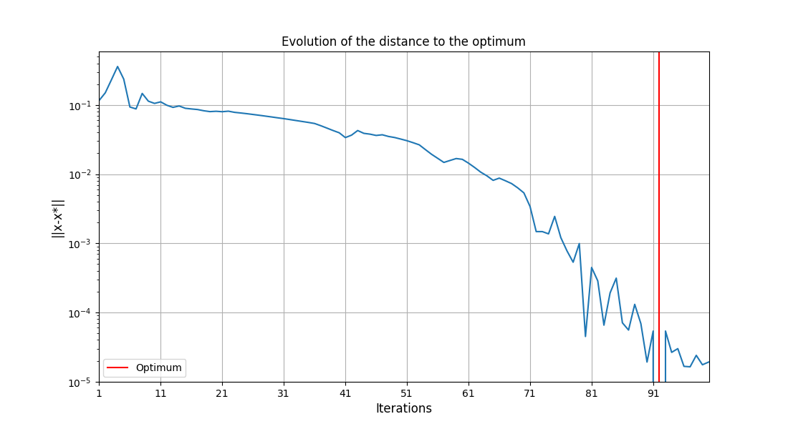
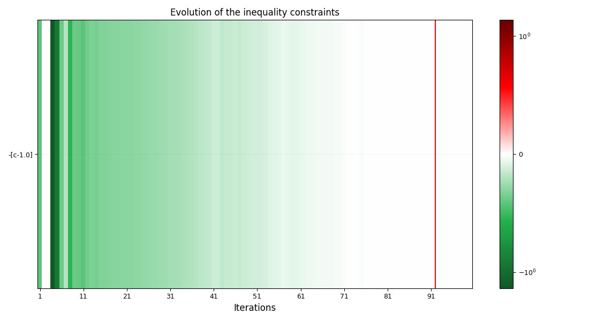

Note
Click here to download the full example code
Solve an optimization problem¶
Problem¶
Minimize a function subject to inequality constraints over a bounded domain.
Solution¶
Build an MDOScenario from a discipline and a design space,
add constraints with add_constraint, then call execute with an optimizer.
Step-by-step guide¶
The following steps minimize the Rosenbrock function \(f(x,y)=(1-x)^2+100(y-x^2)^2\) over \([-2,2]^2\) under the constraint \(c(x,y)=\sqrt{(x-1)^2+(y-1)^2}\geq 1\).
from gemseo import configure_logger
from gemseo import from_pickle
from gemseo import to_pickle
from gemseo.algos.design_space import DesignSpace
from gemseo.disciplines.analytic import AnalyticDiscipline
from gemseo.scenarios.mdo_scenario import MDOScenario
1. Set up the logger¶
configure_logger()
Out:
<RootLogger root (INFO)>
2. Create the discipline¶
discipline = AnalyticDiscipline(
{"z": "(1-x)**2+100*(y-x**2)**2", "c": "((x-1)**2+(y-1)**2)**0.5"},
name="Rosenbrock"
)
3. Create the design space¶
design_space = DesignSpace()
design_space.add_variable("x", lower_bound=-2., upper_bound=2., value=0.)
design_space.add_variable("y", lower_bound=-2., upper_bound=2., value=0.)
4. Build the scenario and add the constraint¶
"DisciplinaryOpt" is the standard formulation for a single discipline.
For several coupled disciplines, use "MDF":
scenario = MDOScenario(disciplines, objective_name, design_space, formulation_name="MDF")
scenario = MDOScenario([discipline], "z", design_space, formulation_name="DisciplinaryOpt")
scenario.add_constraint("c", constraint_type="ineq", positive=True, value=1.)
5. Execute with a gradient-free optimizer¶
scenario.execute(algo_name="NLOPT_COBYLA", max_iter=100)
Out:
INFO - 02:11:36: *** Start MDOScenario execution ***
INFO - 02:11:36: MDOScenario
INFO - 02:11:36: Disciplines: Rosenbrock
INFO - 02:11:36: MDO formulation: DisciplinaryOpt
INFO - 02:11:36: Optimization problem:
INFO - 02:11:36: minimize z(x, y)
INFO - 02:11:36: with respect to x, y
INFO - 02:11:36: under the inequality constraints
INFO - 02:11:36: c(x, y) >= 1.0
INFO - 02:11:36: over the design space:
INFO - 02:11:36: +------+-------------+-------+-------------+-------+
INFO - 02:11:36: | Name | Lower bound | Value | Upper bound | Type |
INFO - 02:11:36: +------+-------------+-------+-------------+-------+
INFO - 02:11:36: | x | -2 | 0 | 2 | float |
INFO - 02:11:36: | y | -2 | 0 | 2 | float |
INFO - 02:11:36: +------+-------------+-------+-------------+-------+
INFO - 02:11:36: Solving optimization problem with algorithm NLOPT_COBYLA:
INFO - 02:11:36: 1%| | 1/100 [00:00<00:00, 710.06 it/sec, feas=True, obj=1]
INFO - 02:11:36: 2%|▏ | 2/100 [00:00<00:00, 1209.43 it/sec, feas=True, obj=100]
INFO - 02:11:36: 3%|▎ | 3/100 [00:00<00:00, 1599.86 it/sec, feas=True, obj=101]
INFO - 02:11:36: 4%|▍ | 4/100 [00:00<00:00, 1786.71 it/sec, feas=True, obj=148]
INFO - 02:11:36: 5%|▌ | 5/100 [00:00<00:00, 1943.97 it/sec, feas=True, obj=24.8]
INFO - 02:11:36: 6%|▌ | 6/100 [00:00<00:00, 2078.10 it/sec, feas=True, obj=3.64]
INFO - 02:11:36: 7%|▋ | 7/100 [00:00<00:00, 2189.09 it/sec, feas=True, obj=6.11]
INFO - 02:11:36: 8%|▊ | 8/100 [00:00<00:00, 2277.04 it/sec, feas=True, obj=1.88]
INFO - 02:11:36: 9%|▉ | 9/100 [00:00<00:00, 2360.03 it/sec, feas=True, obj=1.4]
INFO - 02:11:36: 10%|█ | 10/100 [00:00<00:00, 2430.64 it/sec, feas=True, obj=0.954]
INFO - 02:11:36: 11%|█ | 11/100 [00:00<00:00, 2486.79 it/sec, feas=True, obj=1.21]
INFO - 02:11:36: 12%|█▏ | 12/100 [00:00<00:00, 2535.22 it/sec, feas=True, obj=0.861]
INFO - 02:11:36: 13%|█▎ | 13/100 [00:00<00:00, 2578.06 it/sec, feas=True, obj=0.88]
INFO - 02:11:36: 14%|█▍ | 14/100 [00:00<00:00, 2620.27 it/sec, feas=True, obj=0.841]
INFO - 02:11:36: 15%|█▌ | 15/100 [00:00<00:00, 2649.59 it/sec, feas=True, obj=0.833]
INFO - 02:11:36: 16%|█▌ | 16/100 [00:00<00:00, 2684.46 it/sec, feas=True, obj=0.784]
INFO - 02:11:36: 17%|█▋ | 17/100 [00:00<00:00, 2693.74 it/sec, feas=True, obj=0.762]
INFO - 02:11:36: 18%|█▊ | 18/100 [00:00<00:00, 2714.17 it/sec, feas=True, obj=0.742]
INFO - 02:11:36: 19%|█▉ | 19/100 [00:00<00:00, 2735.73 it/sec, feas=True, obj=0.749]
INFO - 02:11:36: 20%|██ | 20/100 [00:00<00:00, 2760.05 it/sec, feas=True, obj=0.729]
INFO - 02:11:36: 21%|██ | 21/100 [00:00<00:00, 2781.72 it/sec, feas=True, obj=0.727]
INFO - 02:11:36: 22%|██▏ | 22/100 [00:00<00:00, 2804.62 it/sec, feas=True, obj=0.745]
INFO - 02:11:36: 23%|██▎ | 23/100 [00:00<00:00, 2826.35 it/sec, feas=True, obj=0.713]
INFO - 02:11:36: 24%|██▍ | 24/100 [00:00<00:00, 2839.67 it/sec, feas=True, obj=0.7]
INFO - 02:11:36: 25%|██▌ | 25/100 [00:00<00:00, 2825.44 it/sec, feas=True, obj=0.688]
INFO - 02:11:36: 26%|██▌ | 26/100 [00:00<00:00, 2839.45 it/sec, feas=True, obj=0.675]
INFO - 02:11:36: 27%|██▋ | 27/100 [00:00<00:00, 2829.46 it/sec, feas=True, obj=0.664]
INFO - 02:11:36: 28%|██▊ | 28/100 [00:00<00:00, 2844.28 it/sec, feas=True, obj=0.652]
INFO - 02:11:36: 29%|██▉ | 29/100 [00:00<00:00, 2859.44 it/sec, feas=True, obj=0.64]
INFO - 02:11:36: 30%|███ | 30/100 [00:00<00:00, 2869.86 it/sec, feas=True, obj=0.629]
INFO - 02:11:36: 31%|███ | 31/100 [00:00<00:00, 2883.19 it/sec, feas=True, obj=0.618]
INFO - 02:11:36: 32%|███▏ | 32/100 [00:00<00:00, 2897.06 it/sec, feas=True, obj=0.607]
INFO - 02:11:36: 33%|███▎ | 33/100 [00:00<00:00, 2911.18 it/sec, feas=True, obj=0.596]
INFO - 02:11:36: 34%|███▍ | 34/100 [00:00<00:00, 2919.63 it/sec, feas=True, obj=0.585]
INFO - 02:11:36: 35%|███▌ | 35/100 [00:00<00:00, 2930.21 it/sec, feas=True, obj=0.576]
INFO - 02:11:36: 36%|███▌ | 36/100 [00:00<00:00, 2941.02 it/sec, feas=True, obj=0.566]
INFO - 02:11:36: 37%|███▋ | 37/100 [00:00<00:00, 2948.68 it/sec, feas=True, obj=0.544]
INFO - 02:11:36: 38%|███▊ | 38/100 [00:00<00:00, 2959.16 it/sec, feas=True, obj=0.524]
INFO - 02:11:36: 39%|███▉ | 39/100 [00:00<00:00, 2969.88 it/sec, feas=True, obj=0.513]
INFO - 02:11:36: 40%|████ | 40/100 [00:00<00:00, 2976.00 it/sec, feas=True, obj=0.491]
INFO - 02:11:36: 41%|████ | 41/100 [00:00<00:00, 2984.86 it/sec, feas=True, obj=0.511]
INFO - 02:11:36: 42%|████▏ | 42/100 [00:00<00:00, 2994.00 it/sec, feas=True, obj=0.577]
INFO - 02:11:36: 43%|████▎ | 43/100 [00:00<00:00, 3002.91 it/sec, feas=True, obj=0.527]
INFO - 02:11:36: 44%|████▍ | 44/100 [00:00<00:00, 3010.15 it/sec, feas=True, obj=0.493]
INFO - 02:11:36: 45%|████▌ | 45/100 [00:00<00:00, 3018.35 it/sec, feas=True, obj=0.485]
INFO - 02:11:36: 46%|████▌ | 46/100 [00:00<00:00, 3026.72 it/sec, feas=True, obj=0.483]
INFO - 02:11:36: 47%|████▋ | 47/100 [00:00<00:00, 3031.36 it/sec, feas=True, obj=0.511]
INFO - 02:11:36: 48%|████▊ | 48/100 [00:00<00:00, 3039.08 it/sec, feas=True, obj=0.47]
INFO - 02:11:36: 49%|████▉ | 49/100 [00:00<00:00, 3046.33 it/sec, feas=True, obj=0.468]
INFO - 02:11:36: 50%|█████ | 50/100 [00:00<00:00, 3051.25 it/sec, feas=True, obj=0.457]
INFO - 02:11:36: 51%|█████ | 51/100 [00:00<00:00, 3057.86 it/sec, feas=True, obj=0.449]
INFO - 02:11:36: 52%|█████▏ | 52/100 [00:00<00:00, 3065.06 it/sec, feas=True, obj=0.44]
INFO - 02:11:36: 53%|█████▎ | 53/100 [00:00<00:00, 3071.65 it/sec, feas=True, obj=0.431]
INFO - 02:11:36: 54%|█████▍ | 54/100 [00:00<00:00, 3073.92 it/sec, feas=True, obj=0.415]
INFO - 02:11:36: 55%|█████▌ | 55/100 [00:00<00:00, 3066.01 it/sec, feas=True, obj=0.411]
INFO - 02:11:36: 56%|█████▌ | 56/100 [00:00<00:00, 3063.85 it/sec, feas=True, obj=0.394]
INFO - 02:11:36: 57%|█████▋ | 57/100 [00:00<00:00, 3066.17 it/sec, feas=True, obj=0.422]
INFO - 02:11:36: 58%|█████▊ | 58/100 [00:00<00:00, 3070.31 it/sec, feas=True, obj=0.403]
INFO - 02:11:36: 59%|█████▉ | 59/100 [00:00<00:00, 3073.13 it/sec, feas=True, obj=0.393]
INFO - 02:11:36: 60%|██████ | 60/100 [00:00<00:00, 3076.17 it/sec, feas=True, obj=0.391]
INFO - 02:11:36: 61%|██████ | 61/100 [00:00<00:00, 3080.33 it/sec, feas=True, obj=0.382]
INFO - 02:11:36: 62%|██████▏ | 62/100 [00:00<00:00, 3085.22 it/sec, feas=True, obj=0.375]
INFO - 02:11:36: 63%|██████▎ | 63/100 [00:00<00:00, 3086.10 it/sec, feas=True, obj=0.371]
INFO - 02:11:36: 64%|██████▍ | 64/100 [00:00<00:00, 3090.40 it/sec, feas=True, obj=0.363]
INFO - 02:11:36: 65%|██████▌ | 65/100 [00:00<00:00, 3095.78 it/sec, feas=True, obj=0.364]
INFO - 02:11:36: 66%|██████▌ | 66/100 [00:00<00:00, 3101.18 it/sec, feas=True, obj=0.362]
INFO - 02:11:36: 67%|██████▋ | 67/100 [00:00<00:00, 3103.73 it/sec, feas=True, obj=0.357]
INFO - 02:11:36: 68%|██████▊ | 68/100 [00:00<00:00, 3108.96 it/sec, feas=True, obj=0.355]
INFO - 02:11:36: 69%|██████▉ | 69/100 [00:00<00:00, 3114.31 it/sec, feas=True, obj=0.351]
INFO - 02:11:36: 70%|███████ | 70/100 [00:00<00:00, 3117.42 it/sec, feas=True, obj=0.347]
INFO - 02:11:36: 71%|███████ | 71/100 [00:00<00:00, 3122.01 it/sec, feas=True, obj=0.34]
INFO - 02:11:36: 72%|███████▏ | 72/100 [00:00<00:00, 3126.48 it/sec, feas=True, obj=0.334]
INFO - 02:11:36: 73%|███████▎ | 73/100 [00:00<00:00, 3129.66 it/sec, feas=True, obj=0.334]
INFO - 02:11:36: 74%|███████▍ | 74/100 [00:00<00:00, 3131.31 it/sec, feas=True, obj=0.334]
INFO - 02:11:36: 75%|███████▌ | 75/100 [00:00<00:00, 3135.22 it/sec, feas=True, obj=0.337]
INFO - 02:11:36: 76%|███████▌ | 76/100 [00:00<00:00, 3139.51 it/sec, feas=True, obj=0.332]
INFO - 02:11:36: 77%|███████▋ | 77/100 [00:00<00:00, 3141.25 it/sec, feas=True, obj=0.331]
INFO - 02:11:36: 78%|███████▊ | 78/100 [00:00<00:00, 3143.22 it/sec, feas=True, obj=0.329]
INFO - 02:11:36: 79%|███████▉ | 79/100 [00:00<00:00, 3146.16 it/sec, feas=True, obj=0.331]
INFO - 02:11:36: 80%|████████ | 80/100 [00:00<00:00, 3147.75 it/sec, feas=True, obj=0.328]
INFO - 02:11:36: 81%|████████ | 81/100 [00:00<00:00, 3151.04 it/sec, feas=True, obj=0.329]
INFO - 02:11:36: 82%|████████▏ | 82/100 [00:00<00:00, 3154.80 it/sec, feas=True, obj=0.329]
INFO - 02:11:36: 83%|████████▎ | 83/100 [00:00<00:00, 3156.84 it/sec, feas=False, obj=0.328]
INFO - 02:11:36: 84%|████████▍ | 84/100 [00:00<00:00, 3157.99 it/sec, feas=True, obj=0.328]
INFO - 02:11:36: 85%|████████▌ | 85/100 [00:00<00:00, 3157.55 it/sec, feas=True, obj=0.329]
INFO - 02:11:36: 86%|████████▌ | 86/100 [00:00<00:00, 3159.25 it/sec, feas=True, obj=0.328]
INFO - 02:11:36: 87%|████████▋ | 87/100 [00:00<00:00, 3160.06 it/sec, feas=True, obj=0.328]
INFO - 02:11:36: 88%|████████▊ | 88/100 [00:00<00:00, 3162.72 it/sec, feas=True, obj=0.328]
INFO - 02:11:36: 89%|████████▉ | 89/100 [00:00<00:00, 3165.73 it/sec, feas=True, obj=0.328]
INFO - 02:11:36: 90%|█████████ | 90/100 [00:00<00:00, 3167.29 it/sec, feas=True, obj=0.328]
INFO - 02:11:36: 91%|█████████ | 91/100 [00:00<00:00, 3170.30 it/sec, feas=True, obj=0.328]
INFO - 02:11:36: 92%|█████████▏| 92/100 [00:00<00:00, 3173.37 it/sec, feas=True, obj=0.328]
INFO - 02:11:36: 93%|█████████▎| 93/100 [00:00<00:00, 3176.11 it/sec, feas=True, obj=0.328]
INFO - 02:11:36: 94%|█████████▍| 94/100 [00:00<00:00, 3175.40 it/sec, feas=True, obj=0.328]
INFO - 02:11:36: 95%|█████████▌| 95/100 [00:00<00:00, 3178.24 it/sec, feas=True, obj=0.328]
INFO - 02:11:36: 96%|█████████▌| 96/100 [00:00<00:00, 3180.44 it/sec, feas=True, obj=0.328]
INFO - 02:11:36: 97%|█████████▋| 97/100 [00:00<00:00, 3181.98 it/sec, feas=True, obj=0.328]
INFO - 02:11:36: 98%|█████████▊| 98/100 [00:00<00:00, 3184.47 it/sec, feas=True, obj=0.328]
INFO - 02:11:36: 99%|█████████▉| 99/100 [00:00<00:00, 3187.11 it/sec, feas=True, obj=0.328]
INFO - 02:11:36: 100%|██████████| 100/100 [00:00<00:00, 3189.71 it/sec, feas=True, obj=0.328]
INFO - 02:11:36: Optimization result:
INFO - 02:11:36: Optimizer info:
INFO - 02:11:36: Status: None
INFO - 02:11:36: Message: Maximum number of iterations reached. GEMSEO stopped the driver.
INFO - 02:11:36: Solution:
INFO - 02:11:36: The solution is feasible.
INFO - 02:11:36: Objective: 0.3283010611441774
INFO - 02:11:36: Standardized constraints:
INFO - 02:11:36: -[c-1.0] = 6.591815177348082e-05
INFO - 02:11:36: Design space:
INFO - 02:11:36: +------+-------------+--------------------+-------------+-------+
INFO - 02:11:36: | Name | Lower bound | Value | Upper bound | Type |
INFO - 02:11:36: +------+-------------+--------------------+-------------+-------+
INFO - 02:11:36: | x | -2 | 0.4281647812612155 | 2 | float |
INFO - 02:11:36: | y | -2 | 0.1797118490118108 | 2 | float |
INFO - 02:11:36: +------+-------------+--------------------+-------------+-------+
INFO - 02:11:36: *** End MDOScenario execution ***
6. Inspect the results¶
scenario.optimization_result
scenario.optimization_result.constraint_values
Out:
{'-[c-1.0]': np.float64(6.591815177348082e-05)}
scenario.optimization_result.x_opt_as_dict
Out:
{'x': array([0.42816478]), 'y': array([0.17971185])}
scenario.optimization_result.x_0_as_dict
Out:
{'x': array([0.]), 'y': array([0.])}
Plot the optimization history:
scenario.post_process(post_name="OptHistoryView", save=False, show=True)




Out:
/home/paul/ModIA/lh2pac-group/.venv/lib/python3.12/site-packages/matplotlib/_fontconfig_pattern.py:85: PyparsingDeprecationWarning: 'parseString' deprecated - use 'parse_string'
parse = parser.parseString(pattern)
/home/paul/ModIA/lh2pac-group/.venv/lib/python3.12/site-packages/matplotlib/_fontconfig_pattern.py:89: PyparsingDeprecationWarning: 'resetCache' deprecated - use 'reset_cache'
parser.resetCache()
/home/paul/ModIA/lh2pac-group/.venv/lib/python3.12/site-packages/matplotlib/_mathtext.py:2010: PyparsingDeprecationWarning: 'oneOf' deprecated - use 'one_of'
p.space = oneOf(self._space_widths)("space")
/home/paul/ModIA/lh2pac-group/.venv/lib/python3.12/site-packages/matplotlib/_mathtext.py:2020: PyparsingDeprecationWarning: 'leaveWhitespace' deprecated - use 'leave_whitespace'
)("sym").leaveWhitespace()
/home/paul/ModIA/lh2pac-group/.venv/lib/python3.12/site-packages/matplotlib/_mathtext.py:1984: PyparsingDeprecationWarning: 'setName' deprecated - use 'set_name'
val.setName(key)
/home/paul/ModIA/lh2pac-group/.venv/lib/python3.12/site-packages/matplotlib/_mathtext.py:1987: PyparsingDeprecationWarning: 'setParseAction' deprecated - use 'set_parse_action'
val.setParseAction(getattr(self, key))
/home/paul/ModIA/lh2pac-group/.venv/lib/python3.12/site-packages/matplotlib/_mathtext.py:2088: PyparsingDeprecationWarning: 'endQuoteChar' argument is deprecated, use 'end_quote_char'
p.text = cmd(r"\text", QuotedString('{', '\\', endQuoteChar="}"))
/home/paul/ModIA/lh2pac-group/.venv/lib/python3.12/site-packages/matplotlib/_mathtext.py:2146: PyparsingDeprecationWarning: 'unquoteResults' argument is deprecated, use 'unquote_results'
p.math_string = QuotedString('$', '\\', unquoteResults=False)
/home/paul/ModIA/lh2pac-group/.venv/lib/python3.12/site-packages/matplotlib/_mathtext.py:2170: PyparsingDeprecationWarning: 'parseString' deprecated - use 'parse_string'
result = self._expression.parseString(s)
/home/paul/ModIA/lh2pac-group/.venv/lib/python3.12/site-packages/pyparsing/util.py:466: PyparsingDeprecationWarning: 'parseAll' argument is deprecated, use 'parse_all'
return fn(self, *args, **kwargs)
/home/paul/ModIA/lh2pac-group/.venv/lib/python3.12/site-packages/matplotlib/_mathtext.py:2178: PyparsingDeprecationWarning: 'resetCache' deprecated - use 'reset_cache'
ParserElement.resetCache()
/home/paul/ModIA/lh2pac-group/.venv/lib/python3.12/site-packages/gemseo/utils/matplotlib_figure.py:126: UserWarning: FigureCanvasAgg is non-interactive, and thus cannot be shown
plt.show()
<gemseo.post.opt_history_view.OptHistoryView object at 0x7865ae5a9cd0>
Summary¶
Create an MDOScenario, add constraints, call execute,
then read optimization_result.
One step further¶
Results can be persisted and reloaded:
to_pickle(scenario.optimization_result, "optimization_result.pkl")
optimization_result = from_pickle("optimization_result.pkl")
optimization_result
Total running time of the script: ( 0 minutes 0.438 seconds)
Download Python source code: plot_optimization.py